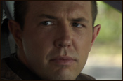

THE CAST
Eric Lange
Originally from Cincinnati, Ohio, Eric graduated from Miami University with a B.F.A. in theatre. After moving to Los Angeles, Eric began working on an extensive list of commercials, selling everything from burgers to beer. In 2009, he will have a recurring role on the hit ABC series LOST. He has also had guest starring roles on shows such as ENTOURAGE, ER, THE WEST WING, CSI, COLD CASE, WITHOUT A TRACE, CSI: NY, JUDGING AMY, NAVY NCIS, BURN NOTICE, AND BOSTON LEGAL. This year, Eric will also be seen on the big screen starring in AS KILLER MOVES, the movie version of the play THE MATING DANCE OF THE WEREWOLF, originally produced at the Rubicon Theatre Company. Eric's stage work includes DRIVING MISS DAISY at the Rubicon Theatre, which earned him an Ovation Award nomination, as well as A STREETCAR NAMED DESIRE, also at the Rubicon. Eric's Los Angeles stage work includes UGLY'S FIRST WORLD at the Actors' Gang, THE NORMAL HEART at the Hudson Backstage Theatre, and ASYLUM at the Court Theatre. When not acting, Eric composes music and checks his e-mail.
Eric Lange
"Kevin"
Originally from Cincinnati, Ohio, Eric graduated from Miami University with a B.F.A. in theatre. After moving to Los Angeles, Eric began working on an extensive list of commercials, selling everything from burgers to beer. In 2009, he will have a recurring role on the hit ABC series LOST. He has also had guest starring roles on shows such as ENTOURAGE, ER, THE WEST WING, CSI, COLD CASE, WITHOUT A TRACE, CSI: NY, JUDGING AMY, NAVY NCIS, BURN NOTICE, AND BOSTON LEGAL. This year, Eric will also be seen on the big screen starring in AS KILLER MOVES, the movie version of the play THE MATING DANCE OF THE WEREWOLF, originally produced at the Rubicon Theatre Company. Eric's stage work includes DRIVING MISS DAISY at the Rubicon Theatre, which earned him an Ovation Award nomination, as well as A STREETCAR NAMED DESIRE, also at the Rubicon. Eric's Los Angeles stage work includes UGLY'S FIRST WORLD at the Actors' Gang, THE NORMAL HEART at the Hudson Backstage Theatre, and ASYLUM at the Court Theatre. When not acting, Eric composes music and checks his e-mail.